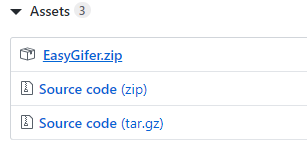
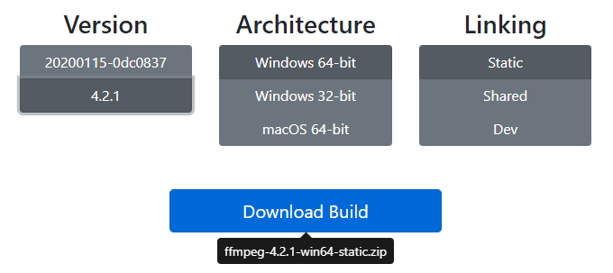
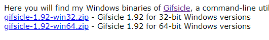
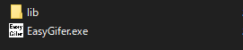
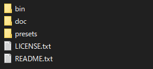
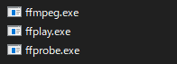
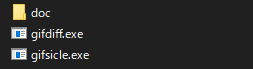
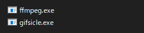
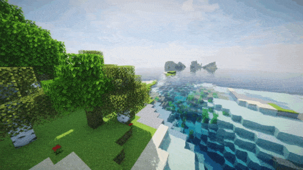
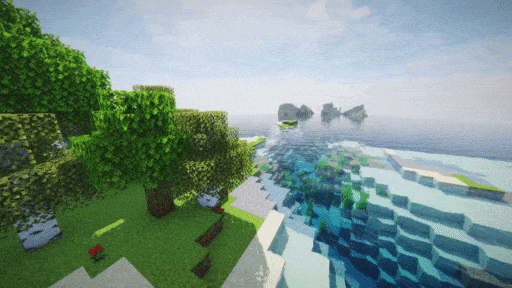

Easy Gifer
動画からGIFに変換することに特化したFFmpegをGUIで操作できるWindows向けソフト
機能一覧
・入力ファイル, 出力ファイルを選択するだけで、動画からGIFに変換することができます。
・GIFの解像度を設定(横幅を指定すれば自動的に縦幅も指定されます)
・GIFのフレームレートを設定
・GIFのクオリティを設定
動画によっては低の方がファイルサイズが大きくなったりします
・Gifsicleを使用したGIFの最適化
最高クオリティとの相性は悪いです
・ダークテーマをサポート
起動時のOSのテーマ設定によって自動的に有効化されます
ダウンロード
EasyGifer.zipをダウンロードしてください
FFmpegFFmpegはStatic版を使用してください(デフォルトで選択されてます)
バージョンは4.2.1で確認しています
Gifsiclegifsicle-x.xx-winXX.zipをダウンロードしてください
インストール方法
1. 必要なファイルのダウンロード
EasyGifer.zipをクリックするとダウンロードできます
基本的にバージョンは下の方推奨です
Architectureはお使いのOSに合ったものを選択してください
LinkingはStaticを選択してください
win32 / win64 はお使いのOSに合ったものダウンロードしてください
2. ファイルの配置
ダウンロードしたファイルをすべて解凍してください
libの中に必要なファイルを設置します
FFmpegのフォルダを進むとこのような感じのフォルダがあるので、binの中に入ってください
その中にあるffmpeg.exeをEasyGiferのlibの中に入れてください
gifsicleも進むとこのようなファイルがあるので、gifsicle.exeをEasyGiferのlibの中に入れてください
EasyGiferのlibの中がこのような感じになればインストール完了です
サンプル
クリックで再生できます

ファイルサイズ: 4.74MB
クオリティ: 高
解像度: 512x512
フレームレート: 15fps
動画時間: 7秒
GIFの最適化有効
VRChat ID: riku1227
最高クオリティの最適化無しはこちら(13.4MB){kind=link}
ファイルサイズ: 1.30MB
クオリティ: 低
解像度: 512x288
フレームレート: 15fps
動画時間: 5秒
GIFの最適化有効
ファイルサイズ: 1.95MB
クオリティ: 中
解像度: 512x288
フレームレート: 15fps
動画時間: 5秒
GIFの最適化有効
ファイルサイズ: 2.94MB
クオリティ: 高
解像度: 512x288
フレームレート: 15fps
動画時間: 5秒
GIFの最適化有効

ファイルサイズ: 7.05MB
クオリティ: 世界を犠牲にしてでも最高級のGIFを生成したい人向け
解像度: 512x288
フレームレート: 15fps
動画時間: 5秒
GIFの最適化無効
ライセンス